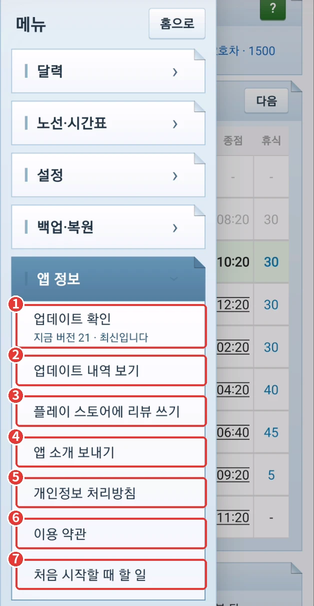

① 업데이트 확인 : 플레이 스토어에 새 버전이 있는지 확인합니다. 새 버전이 있으면 스토어로 가는 단추가 나옵니다.
② 업데이트 내역 보기 : 바뀐 내용을 날짜별로 봅니다(인터넷 창이 열립니다).
③ 플레이 스토어에 리뷰 쓰기 : 플레이 스토어의 이 앱 화면이 열립니다.
④ 앱 소개 보내기 : 다른 기사님께 이 앱을 문자로 알립니다. 글을 고치고 번호를 넣은 뒤 '문자 앱 열기'를 누르고, 보내기는 문자 앱에서 누릅니다.
⑤ 개인정보 처리방침 : 앱 안에서 전문을 봅니다.
⑥ 이용 약관 : 앱 안에서 전문을 봅니다.
⑦ 처음 시작할 때 할 일 : 권한 설정, 시간표 받기, 알람 테스트를 다시 봅니다.